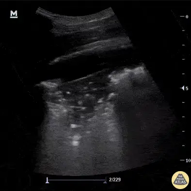

POCUS Tips › Lung
Effusion and ConsolidationPLAPS
Free fluid above the diaphragm and the shapes consolidated lung takes — the posterolateral base is where both hide.
Open the interactive view with the loop and quiz →
Where to put the probe
- Window
- Posterolateral base (PLAPS point), posterior axillary line above the diaphragm
- Marker
- Patient’s HEAD (12 o’clock)
- probe
- curvilinear or phased
- preset
- abdominal / lung
- depth
- 12–16 cm
Get the view
- Find the diaphragm first, with liver or spleen as your reference organ — everything is read relative to it.
- Angle up and posteriorly into the costophrenic recess where dependent fluid collects.
- Look for anechoic space above the diaphragm and for the spine sign: vertebral bodies visible above the diaphragm.
- Then look at the lung itself: tissue-like echotexture, ragged borders, or bright dots moving with breath.
What you are looking at
- Anechoic effusion
- Black space above the diaphragm that changes shape through the respiratory cycle.
- Hepatized lung
- Consolidated lung takes on liver-like tissue texture instead of a bright pleural line with artifact below it.
- Dynamic air bronchograms
- Bright dots and branching lines inside the consolidation, moving with each breath — favors pneumonia over atelectasis.
- Shred sign
- The ragged deep border between consolidated and still-aerated lung.
- Diaphragm
- The bright curved line separating chest from abdomen — find it first; everything here is read relative to it.
- Spine sign
- Vertebral bodies visible above the diaphragm, because fluid rather than air is conducting the beam.
Signs and sizing
| Sign | Rule of thumb | Interpretation |
|---|---|---|
| Spine signvertebrae visible above the diaphragm | present | pleural effusion — aerated lung would obscure them |
| Rough volumemax interpleural distance in mm × 20 | ≈ mL | a crude estimate for planning drainage, not a precise number — validated in supine, mechanically ventilated patients measured at end-expiration; expect more error awake, upright, or breathing spontaneously |
| Plankton / swirling debriswatch through several cycles | present | complex effusion — empyema or hemothorax become more likely |
| Dynamic vs static air bronchogramswatch bright dots through a breath | dynamic = moving | dynamic favors pneumonia; static favors atelectasis behind an obstruction |
Don’t be fooled — pitfalls
- Mirror artifact above the diaphragmAerated lung reflects liver texture upward and mimics consolidation. A true finding persists as you fan; a mirror does not.
- Ascites read as pleural fluidIdentify the diaphragm and which side of it the fluid sits on before you commit.
- Liver or spleen called consolidationFollow the organ through the respiratory cycle; the diaphragm sweeps and separates them.
- Anechoic does not mean simpleA quiet-looking effusion can still be infected. Clinical context, not echogenicity, drives the tap.
Bad image? Fix it
- Cannot reach the base in a supine patientCome in from the posterior axillary line with the probe angled up, or roll the patient slightly toward you.
- Rib shadows hide the recessRotate obliquely to run along the intercostal space instead of across ribs.
- Too shallow to see the whole collectionIncrease depth to 16 cm; you need the diaphragm and the spine in the same frame.
- Bowel gas confuses the pictureUse the liver on the right and the spleen on the left as the reference organ and stay high.
So what — what the finding changes
- Large effusion + hypoxiaConsider therapeutic thoracentesis; mark the site under ultrasound in the position you will actually tap.
- Consolidation + sepsis physiologyAntibiotics per local guidance; look for effusion in the same zones and reassess for empyema.
- Complex effusion with septationsEscalate early — these often need a chest drain and specialist input rather than a needle.
Educational use only. Not for diagnosis or treatment decisions — confirm findings with formal imaging and your own judgment. By Yonathan Daniel, MD · About · Last reviewed 2026-09-15.